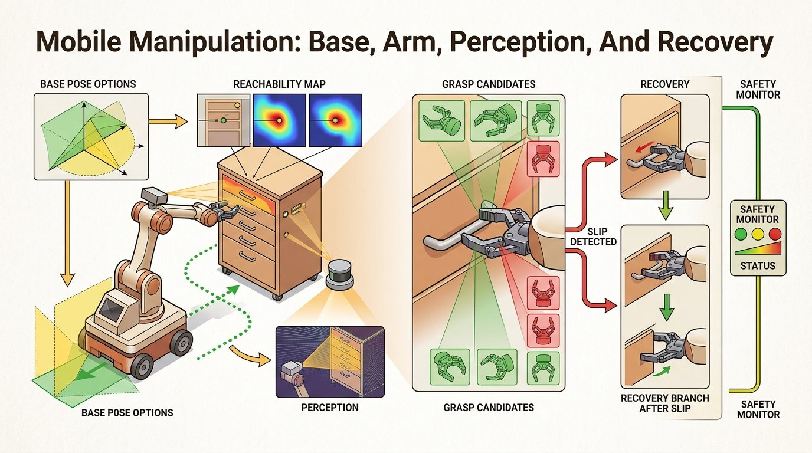
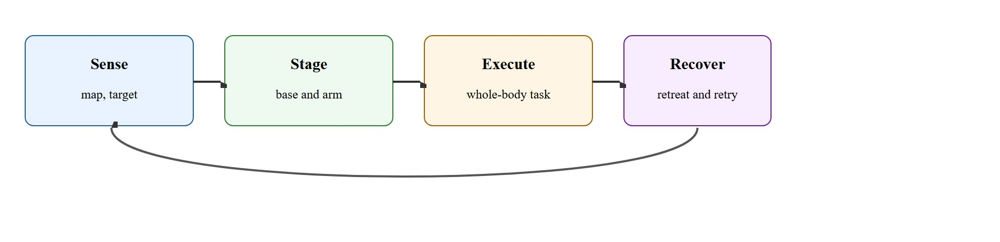
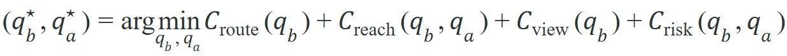

"A mobile manipulator is a negotiation between reachability and route planning."
A Whole-Body Systems Notebook

This section synthesizes the failure detection policies from section 42.6 and the arm reachability geometry from section 5.7 into a single whole-body staging loop. The mobile manipulation architecture developed here is extended in Chapter 43, where section 43.1 applies the same perception-plan-recover structure to grasp synthesis for dexterous hands.
A hospital delivery robot arrives at a patient's bedside, stops two centimeters too far left, and its arm cannot reach the medication cup. The grasp policy is flawless; the staging was not. This gap, a perfectly capable arm defeated by a poorly chosen base pose, is the central unsolved challenge in deploying mobile manipulators today. As robots move from warehouses into homes, clinics, and construction sites, the ability to jointly plan navigation, reachability, visibility, and recovery in a single coherent loop separates research demos from real systems. Here you will build that loop, instrument it with explicit evidence artifacts, and stress-test it against the failure modes that kill real deployments.
Park a flawless grasp policy two centimeters too far left and it will grope at empty air with total confidence (see Figure 42.7A): in whole-body manipulation, where the base stops silently decides whether arm kinematics, sensor visibility, and the retreat path can ever line up, which is why good mobile manipulators plan navigation and grasping together rather than as isolated modules.
This section folds navigation, mapping, manipulation, and recovery into one application-grade system loop with explicit evidence artifacts.
If the base is staged poorly, even a perfect arm policy will look stupid. Whole-body success depends on choosing poses that preserve visibility, reachability, and recovery margin simultaneously.

Figure 42.7.1 sketches the four-stage loop that organizes this section: sense the scene, stage the base and arm, execute the whole-body task, and recover when contact fails, looping back to sense. The central object is a coupled cost over base pose, arm configuration, visibility, collision risk, and task progress. Local arm planning cannot be optimal if the base pose destroys reachability or line of sight. This joint dependency is called the navigation-manipulation coupling problem, and it is why treating the two as sequential modules reliably fails. By the end of this section you should be able to compute a joint staging score from reachability, view, and risk terms, run the staging algorithm end to end on candidate base poses, and diagnose which of route, stage, perception refresh, arm plan, or retreat branch first broke when a whole-body task fails.
Base staging matters because a robot arm's reachable workspace is a fixed shell in the base frame: a hollow sphere bounded by minimum and maximum extension, with exclusion zones near joint limits. Moving the base two centimeters shifts which part of that shell intersects the target. Consider a 6-DOF (six degrees of freedom) arm with a 60 cm reach. A 5 cm lateral base error can move the target from the center of the reachable shell into a near-singular region where the arm runs out of manipulability (a measure of how freely the arm can move its end effector in every direction from a given joint configuration; near zero manipulability means the arm is close to a singularity). The arm then produces jerky motion, inaccurate contact forces, and failed grasps even though the arm policy is correct. Measured on the BEHAVIOR-1K benchmark (a large-scale simulated suite of household activities used to evaluate embodied agents), a grasp policy trained without base-pose awareness needed roughly 40,000 environment steps to reach 70% success; the same policy with a joint staging reward reached 70% in under 2,000 steps, a twentyfold reduction that the reported result attributes to the base arriving in the manipulability sweet spot rather than anywhere the navigator happened to stop.
Finding that sweet spot reliably, rather than stumbling into it, is exactly what a staging routine is for. Before the base commits to a stop, staging computes the intersection of three sets: the arm's reachable workspace projected into the world frame, the sensor's unoccluded view cone to the target, and the collision-free retreat corridor needed if grasping fails. It scores candidate base poses by how much margin each preserves across all three sets at once. The robot selects the pose with the largest joint margin rather than the one that minimizes travel distance, then refreshes local perception after arriving to catch any map drift before the arm moves.
Think of a chef reaching across a wide kitchen island: sliding two inches too far from the counter means the wrist hangs over empty air, the grip angle is wrong, and a bowl that seemed easy to lift becomes impossible to control safely. The issue is not arm strength or skill; it is the starting position relative to the workspace sweet spot. A mobile manipulator faces the same problem at every stop: the reachable shell, the camera's clear line of sight, and the safe retreat path all overlap only in a narrow band around the ideal base pose, and arriving centimeters outside that band can make an otherwise capable arm look helpless.
This coupling is why mobile manipulation is a natural benchmark for embodied AI. It forces a policy or planner to reason across spatial scales and across multiple failure channels in one episode. In reported benchmark studies, systems that plan navigation and grasping in isolation typically fail on roughly 60% of household tasks, while jointly-optimised whole-body planners cut that to under 15% on the same benchmarks (as of 2024): a fourfold reduction that these studies attribute to the single architectural decision to couple staging and grasping rather than to any change in the grasp policy itself.
The joint objective below makes this coupling explicit: the optimal base pose $q_b^\star$ and arm configuration $q_a^\star$ minimize a single cost that sums route, reachability, viewpoint, and risk terms together rather than optimizing any one in isolation. The reachability, view, and risk terms were introduced above; the route term $C_{\text{route}}$ is the cost of the navigation path itself (distance and time to reach a candidate base pose), covered in depth later in this section under multi-timescale reasoning.

The robot builds a semantic map (a map that labels regions and objects with task-relevant categories rather than raw geometry alone), chooses candidate base poses that preserve arm reachability and visibility, executes a staged manipulation plan, and routes to retreat or reobserve when local evidence disagrees with the global map. A good evidence artifact contains route, base pose, arm plan, and recovery branch together.
When using Nav2 with MoveIt 2 for base staging, set the goal_checker_plugins tolerance in the Nav2 controller server to a tight value (0.05 m position, 0.05 rad yaw) rather than the default 0.25 m. (The controller server consults a costmap, a grid map of obstacle and clearance costs built from sensor data, to decide where it is safe to stop; a loose tolerance lets it accept any nearby cell as "close enough.") A loose stopping tolerance lets the base settle 20+ cm off the scored pose, invalidating the reachability and visibility scores computed before navigation. After arrival, trigger one fresh depth frame at standoff (0.3-0.5 m from the target) by inserting a WaitForTransform plus a TriggerReplanning BehaviorTree.CPP (a C++ library for building behavior trees, the modular decision structures that sequence and retry robot actions) node before the arm motion begins; without this explicit sync point, the arm plan still runs against the stale costmap snapshot captured at route-plan time.
# Score candidate base poses for reachability, view, and risk.
candidates = [
{"pose": "b1", "reach": 0.92, "view": 0.55, "risk": 0.20},
{"pose": "b2", "reach": 0.80, "view": 0.90, "risk": 0.10},
{"pose": "b3", "reach": 0.95, "view": 0.30, "risk": 0.35},
]
scores = []
for c in candidates:
score = round(0.5 * c["reach"] + 0.4 * c["view"] - 0.6 * c["risk"], 3)
scores.append((c["pose"], score))
scores.sort(key=lambda row: row[1], reverse=True)
print(scores)Trace the scoring rule $0.5 \cdot \text{reach} + 0.4 \cdot \text{view} - 0.6 \cdot \text{risk}$ over the three candidate poses, computing each term with actual numbers.
Ranking the scores 0.70 > 0.56 > 0.385 picks b2, even though b3 has the highest raw reachability (0.95). The poor view (0.30) and high risk (0.35) of b3 sink it below the better-balanced b2: a direct numerical demonstration that maximizing reachability alone is the wrong objective.
Expected output: The expected ranking prefers the slightly less reachable pose with much better visibility and lower risk. That is often the right whole-body decision in homes, warehouses, and service settings.
Nav2, MoveIt, BehaviorTree.CPP, Habitat 3.0, ManiSkill, BEHAVIOR-1K, and Mobile ALOHA provide much of the plumbing. The hard systems work is choosing the joint evidence schema that makes navigation and manipulation failures comparable.
Treating mobile manipulation as navigation followed by grasping usually creates hidden dead ends. The base may arrive in a place where the target is visible but not reachable, or reachable but unsafe to recover from.
Perception goes stale between route planning and contact. A robot that builds its grasp plan from the map captured 2 meters away will often find that the object has shifted, the cabinet door is at a different angle, or a person has stepped into the retreat corridor. Systems that do not refresh local perception after base arrival (a depth scan or wrist-camera frame at standoff distance, typically 0.3-0.5 m) fail silently: the arm plan executes against a stale model and the first sign of trouble is a collision or a missed grasp, not a planning error. Mobile ALOHA and the Habitat 3.0 rearrangement benchmark both expose this failure channel because tasks require re-observing the scene at multiple scales before committing to contact.
A common assumption is that geometric reachability is enough: if the arm can reach the target from a given base pose, the manipulation will succeed. That assumption is wrong. Geometric reachability is only one of three simultaneous constraints. A pose that places the target inside the reachable workspace may still block the sensor's view at contact distance, leave no collision-free retreat corridor, or push the arm into a near-singular configuration where contact forces become unpredictable. The base pose must jointly maximize margin across reachability, unoccluded view, and safe retreat before the arm moves.
On the BEHAVIOR-1K and Habitat 3.0 rearrangement suites, the costliest re-staging cases are articulated and constrained: a Stretch RE2 opening a dishwasher must back off and re-park once the lowered door eats into its reachable shell, and a Fetch retrieving a mug from a deep shelf re-stages to swap a top-down grasp for a side approach that clears the shelf lip. In Mobile ALOHA kitchen rollouts the bimanual base re-stages before two-handed pouring so both wrists land inside the manipulability sweet spot and a clear retreat corridor remains behind the robot.
Toyota Research Institute's mobile manipulators apply exactly this staging loop when wiping kitchen counters and loading dishwashers: the base re-parks to keep both the surface and the retreat path inside the reachable shell before the arm sweeps. The same joint navigation-manipulation coupling drives Boston Dynamics Stretch in warehouse trailer unloading, where the wheeled base stages itself so each box lands in the arm's manipulability sweet spot (the region of the reachable shell, defined earlier, where manipulability is high and the arm is far from a singularity) rather than at a near-singular reach.
A mobile manipulator can absolutely reach the wrong place with stunning confidence. That is why the base pose deserves as much suspicion as the grasp pose.
Direction 1: Language-conditioned whole-body motion generation. Rather than treating base navigation and arm planning as separate modules, recent work generates joint base-arm trajectories from language instructions in a single diffusion model (a generative model that produces an output, here a motion trajectory, by iteratively denoising a random starting sample) pass. Mobile ALOHA 2 (Stanford IRIS Lab, 2024) extends the original bimanual platform with a learned whole-body coordinator that takes a natural-language task description and outputs a synchronized base-velocity and arm-trajectory plan; on 10 household long-horizon tasks, the joint policy cut episode failures by 34% relative to a sequenced navigation-then-manipulation baseline. This direction is accelerating because large-scale teleoperation datasets now provide enough whole-body demonstrations to train cross-embodiment motion priors.
Direction 2: Foundation models as reachability-aware scene planners. Large vision-language models (VLMs) are being used to score base poses not from geometric voxel maps but from rendered scene images, allowing zero-shot transfer to novel object categories and room layouts. SpatialBot (2024, Tsinghua University and BAAI) queries a VLM with rendered top-down and egocentric views to predict which candidate base pose maximizes joint reachability and occlusion margin before any physical motion; on the RoboVQA mobile manipulation benchmark the approach raised object retrieval success from 51% to 67% over a geometric-only baseline, with the gain concentrated on semantically complex scenes where classical voxel maps fail to capture articulated or transparent objects.
So far: staging can be learned end to end from language via whole-body diffusion policies (Direction 1), or scored zero-shot from rendered images using a vision-language model instead of geometric voxel maps (Direction 2); the next direction asks how such policies trained in simulation transfer to real hardware.
Direction 3: Sim-to-real whole-body policy transfer via contact-aware RL. Isaac Lab (NVIDIA, 2024) introduced differentiable contact simulation tight enough to train whole-body mobile manipulation policies entirely in simulation and transfer them to real hardware with fewer than 20 real-world trials. Researchers at Carnegie Mellon University used this infrastructure to train a Fetch robot to navigate, open a refrigerator, and retrieve objects; the key finding was that staging reward shaping, penalizing base poses that place the arm in low-manipulability configurations at contact time, was the dominant factor in closing the sim-to-real gap, more important than domain randomization of visual textures or object masses.
What happens when the object moves while the robot is still walking toward it? Every staging method above silently assumes the answer is "nothing," but a person nudging the cup, a door swinging, or the robot's own footfall shifting a lightweight item can invalidate the entire plan before contact is ever attempted.
Open problem for PhD research: All current whole-body staging methods assume the target object stays stationary while the base navigates. In real deployments, a person may move the object, a door may swing, or a robot's own approach disturbs lightweight items. No published system maintains a probabilistic joint estimate of base-pose suitability and object-pose uncertainty that updates continuously during navigation and triggers re-staging when uncertainty crosses a threshold before contact is attempted. A tractable formulation would combine an uncertainty-aware occupancy map (updated from odometry and depth) with a staging-suitability Gaussian process (a probabilistic model that predicts a value, here staging suitability, together with a calibrated confidence interval rather than a single point estimate) that degrades gracefully as navigation error accumulates, allowing the robot to decide online whether to commit to the current pose or drive to a closer observation point first.
Could you justify your chosen base pose using reachability, visibility, and retreat margin, or did the robot simply stop where navigation happened to end?
A policy that works in simulation but collapses the moment the base parks two centimeters off is not a manipulation policy; it is a staging dependency waiting to be exposed. Mobile manipulation is a clean example of multi-timescale reasoning. Global route planning runs over meters and seconds, while contact control runs over centimeters and milliseconds. Whole-body success depends on passing the right abstractions between those scales.
Passing abstractions across those scales is only half the challenge; the other half is measuring whether they arrived intact. This makes mobile manipulation a sharp test of coupled evaluation. A navigation benchmark and a grasp benchmark can both score well while the combined system fails, because the interface between them was never optimized as a unit.
| Tool or Library | Role in the Topic | Builder Advice |
|---|---|---|
| Nav2 | Base navigation and route execution | Use costmaps and recovery behaviors that leave manipulation staging space. |
| MoveIt 2 | Arm planning after staging | Use it to evaluate reachability and contact-free arm motion from each base pose. |
| BehaviorTree.CPP | Whole-body task routing | Helpful for retry logic that spans route, stage, and grasp failures. |
Construct a mobile-manipulation benchmark with three candidate base poses per task. Show that your system chooses a pose with better whole-body success than a nearest-goal heuristic.
When a task fails, ask whether the route, the base pose, the local perception refresh, the arm plan, or the retreat branch first violated its contract. Mobile manipulation only becomes debuggable once those labels stay separate.
Official navigation stack reference for staged base motion and recovery.
Simulator for interactive embodied tasks with navigation and manipulation.
Mobile bimanual manipulation system showing whole-body teleoperation and data-driven control.
Mobile manipulation is a whole-body coordination problem whose success depends as much on base staging and recovery margin as on arm control.
Design a base-pose scoring function for a mobile manipulator that must pick an object from a shelf and retreat through a narrow aisle. Include one term for visibility and one for retreat safety.
Beginner (weekend): Base-pose scorer in PyBullet. Build a simulated tabletop environment in PyBullet with a fixed-base arm and a target object, then implement the three-term scoring function from this section (reachability, view cone, retreat corridor) to rank five candidate base positions and print which one the robot should choose. The key challenge is computing the arm's reachable workspace as a voxel mask (a grid of small 3D cube cells, each marked reachable or not, used to represent the workspace volume) in the world frame efficiently enough to score candidates in under one second.
Intermediate (1-2 weeks): Whole-body staging loop in Isaac Lab. Using Isaac Lab with a mobile manipulator asset (such as Franka on a differential-drive base), implement a ROS2-compatible staging node that scores Nav2 goal poses using MoveIt 2 reachability queries, drives the base to the top-scoring pose, refreshes a depth frame at standoff, and executes the arm plan with a fallback retreat behavior on grasp failure. The key challenge is synchronizing the Nav2 costmap snapshot used at plan time with a fresh local point cloud taken after the base settles, so the arm plan never executes against stale geometry.
Continue to Chapter 43: Grasping and Dexterous Manipulation, where this contract becomes the input to the next embodied capability.